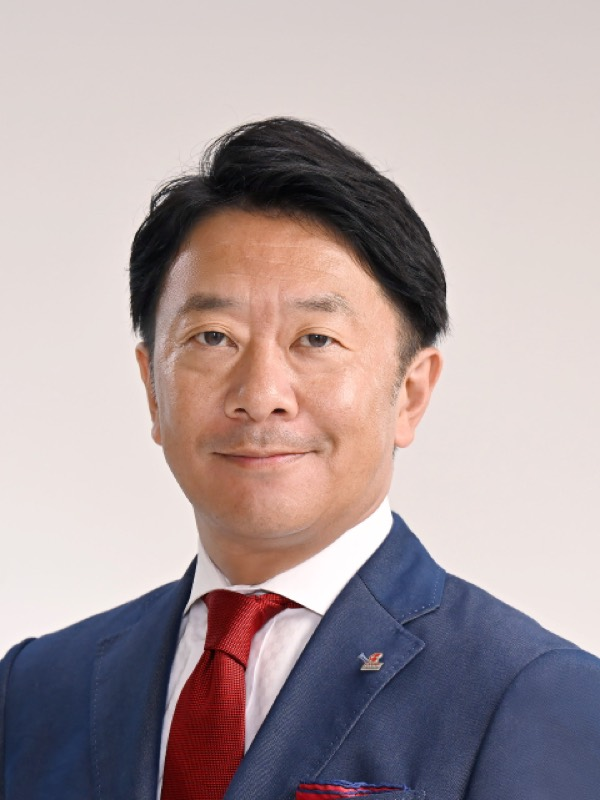
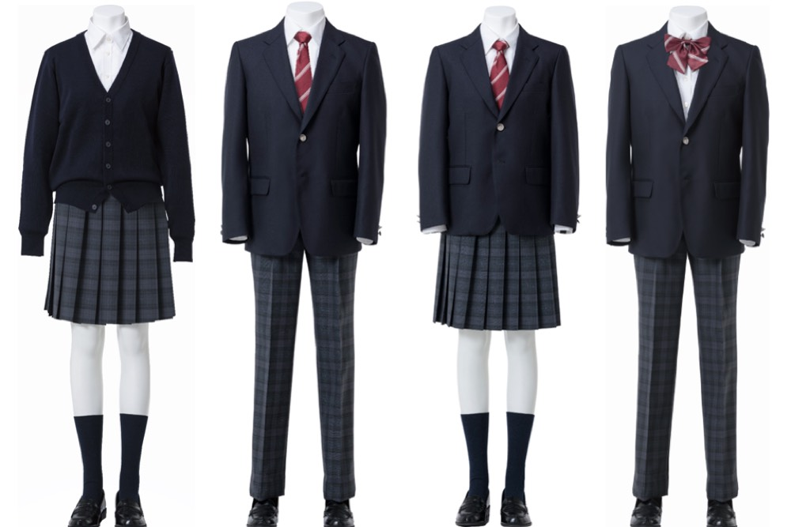
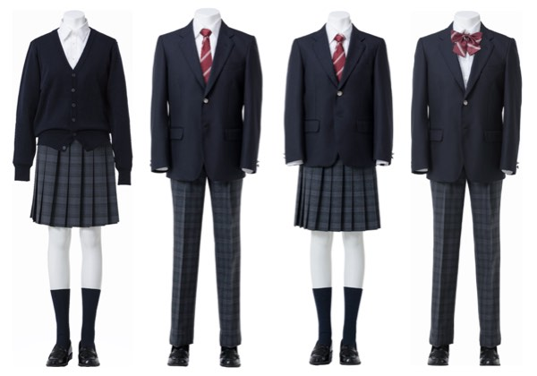
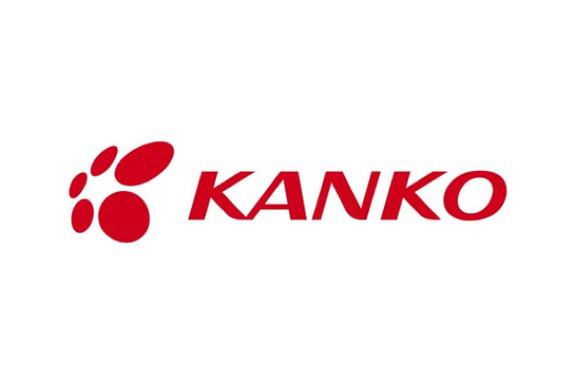
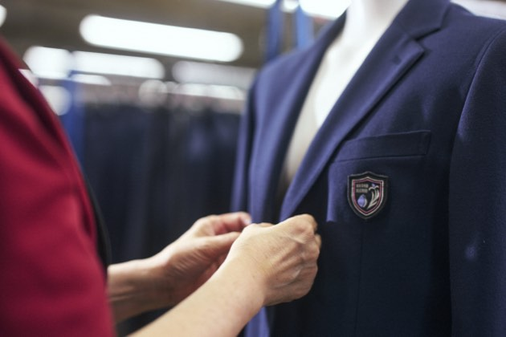
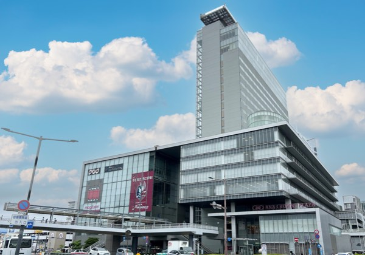
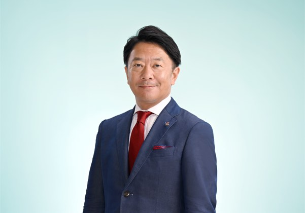
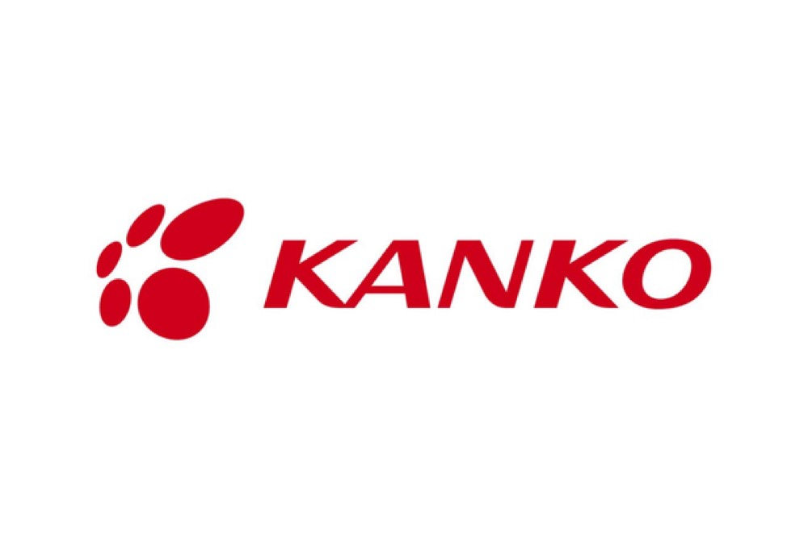

教育と地域を支えるカンコーの挑戦
尾﨑 茂shigeru ozaki
菅公学生服株式会社 代表取締役社長
1973年岡山県倉敷市生まれ。青山学院大学卒業後、1998年に尾崎商事株式会社(現菅公学生服株式会社)に入社。生産本部、営業本部などを経て、2001年に社長室担当取締役就任。2003年に専務取締役に就任し、管理本部、営業本部を担当。2006年に第8代目となる代表取締役社長に就任。制服販売の枠を超え、教育現場の課題解決を軸とした多角的な新規事業を精力的に牽引している。
企業サイトを見るCHAPTER 01
企業文化と経営者への道のり

Q御社の最大の強みである「真面目さ」という企業文化は、組織や採用にどのように反映されていますか。
A私どもの最大の強みは、社内外から一貫して高い評価をいただいている「真面目さ」にあります。この正直で前向きな企業文化は、当社の採用活動にも色濃く反映されています。実際の採用面接には私自身も同席し(最終面接)、この誠実な社風に心から共感してくれる学生とのマッチングを大切に行っています。
近年の組織や採用体制におきましては、各都道府県の営業拠点ごとに地域密着で採用を行う形や全国転勤を前提とした総合職採用など、目指すキャリアに合わせた働き方ができる環境になっています。最近では特定の地域や職種を強く希望する学生が増加している傾向にありますが、どのような形であれ、真面目で正直な人材が集まる組織文化こそが当社の事業を支える基盤となっています。
Q尾﨑社長はもともと家業を継ぐ意思がなかったとのことですが、経営者への道を歩むことになった経緯をお聞かせください。
A学生時代は家業を継ぐ意思を全く持っておらず、大学時代はコンサルティングファームへの就職を第一に志望していました。当時は事業を支える数字や財務管理といった分野に強い関心を抱いてはいたものの、自らが事業を継承することについては特に深く意識していなかったのが正直なところです。しかし、大学卒業を控えた時期に父である会長と相談し、ビジネスの修行の一環として岡山へ帰郷することとなりました。結果として、そこから経営者になるまでこの会社にいたことになりますが、当初考えていた想定とは違っていましたね。ただ、最初は予期せぬ道ではありましたが、もともと数字を見ることに関心は強かったですし、財務への関心やコンサルティングの視点は現在の多角的な経営分析を行う上で非常に大きな財産となっていると感じています。
CHAPTER 02
地域特性への対応と教育現場に寄り添う新事業
Q全国展開を進める中での地域特性への対応や地域社会との関わり方について現在の方針を教えてください。
A商習慣や県民性は地域によって異なるため、本社の考えを押しつけるのではなく、現地での最適化をはかることが重要であるという方針を示しています。
また、地域社会との関わり方につきましても、当社が主体となってイベントを主催するというよりは地元の祭りやマラソン大会などへの積極的な協力や参加を通じて、地域に深く根ざした関わり合いを大切にしています。それぞれの地域に寄り添い、現地のニーズに誠実に応え続けることこそが、私どもの目指す全国展開のあり方です。
Q学校現場の課題解決に向けて始動した事業である「スクマ」や「UNINOWA(ゆにのわ)」の具体的な取り組みについてお聞かせください。
A私どもは教育現場に非常に近い位置で事業を展開しております。その中で培った信頼を土台に事業展開を行い、生活全般を支える付加価値の提供を強化しています。
そのひとつである「スクマ」は、支払い手段の複雑さを解消するために立ち上げた販売代行サービスです。教科書や画材、シューズなどを一括で購入・決済できるようにすることで、学校側の集金業務の簡素化と保護者様の利便性向上を同時に実現しました。
また、制服のフリマサービス「UNINOWA」は、家計にも環境にもやさしい取り組みとしてスタートしました。卒業やサイズアウトによって使わなくなった制服や体操服を、同じ学校の保護者同士で売買できるプラットフォームを提供しています。これらの事業の展開には学校側の合意が必要となるため、現在丁寧に参加校の拡大を進めています。





CHAPTER 03
社会に貢献する教育支援とこれからの展望

Q「マナボネクト」による教育支援や全国中学校体育大会(以下全中)の運営など、社会課題にアプローチする事業の狙いはどこにありますか。
A教育現場と社会をより強固に繋ぐため、新会社「カンコーマナボネクト株式会社」を設立しました。ここではウェルビーイングや非認知能力の育成など、文部科学省の新しい方針にも対応した先進的な社会の取り組みを支援しています。
また、全中の運営におきましては、持続可能な大会運営の実現を目指し、日本中学校体育連盟様と包括連携協定を結びました。今年度岡山県で開催される4競技から具体的な支援を開始し、令和9年度より本格的に大会全体の運営を担います。スポーツを通じた全国の中学生の成長に寄与すると同時に、教育現場が直面している教員の働き方改革という深刻な社会課題を両立して解決することを目的としています。
Q制服の製造販売にとどまらない、御社の今後の展望や具体的な目標についてどのようにお考えでしょうか。
A今後の展望として、私どもは「一生のお付き合い」を大きなテーマに掲げ、ライフタイムバリューの追求に本気で取り組んでいます。これまでの制服や体操服の製造販売という枠に決して留まることなく、学校生活、ひいては人生の様々なステージを支えるサービスの拡充を目指しています。具体的な目標としては、現在多方面で立ち上がっている「スクマ」や「UNINOWA」、「マナボネクト」といった教育周辺の新規事業の認知度を高めていくことが最優先事項です。現在はまさに事業の土台が整ったフェーズにありますので、今後はそれぞれの事業を大胆に伸ばし、社会貢献とビジネスを統合させながら、地域に根ざした持続的な成長を実現してまいりたいと考えています。